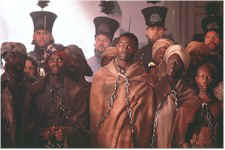

Contents | Features | Reviews | News | Archives | Store |
 |
|
| Movie Credits | Buy It! |
Amistad
Review by Carrie
Gorringe
Posted 12 December 1997
|  | Directed by Steven Spielberg Starring
Anthony Hopkins, Morgan Freeman, Screenplay by David Franzoni |
If those who supported the "peculiar institution" known as slavery thought that the brutal suppression of the 1831 Nat Turner Revolt in Virginia was the end of slaveholders’ difficulties with their current and prospective "property," there were more surprises in store. Eight years after Nat Turner dared to dream of freedom, fifty-three would-be slaves aboard the Spanish slave ship La Amistad (a Spanish word that, in the most savage of ironies, means "friendship"), led by one of their own, a man named Cinqu¾ (Hounsou), rebelled against their chains and slaughtered most of the ship’s crew. Imprisoned in New Haven, CT, for their crime, the surviving rebels are eventually defended in the United States Supreme Court by former president John Quincy Adams (Hopkins). However, the defendants are caught in the middle of the usual mess known as an American presidential election. Incumbent Martin Van Buren (Hawthorne), unfairly blamed for the financial panic of 1837, is desperate for an issue that will allow him to hold on to power. After the Amistad defendants have won two court battles, led by an inexperienced lawyer named John Baldwin (McConaughey), Van Buren simply appeals the verdict as a gesture to pro-slavery forces, most obviously those who hold electoral votes in the South (especially after Van Buren has been subjected to electioneering blackmail by South Carolina Senator John C. Calhoun) and sends his representative, Secretary of State Forsyth (Paymer) to Connecticut to oversee the trial. Queen Isabella of Spain (Paquin) is also claiming property rights over the slaves, as are the owners of the Amistad, and the American sailors who rescued the survivors. Their lives soon become one endless round of imprisonment and temporary reprieve from yet another round of "interested parties."
The problems with Amistad are many, but none exist at the pictorial level. As with his depiction the liquidation of the Warsaw Ghetto in Schindler’s List, Spielberg proves once again, with the assistance of Schindler’s List cinematographer Janusz Kaminski, that he is a master at invoking empathy through the composition of visuals loaded with unequivocal messages. If you ever wanted to know exactly what it was like to be one of hundreds of slaves chained together in the fetid hold of a ship making the "middle passage’, this is as good a place as any to start. Spielberg’s depiction is justly disgusting and heart-rending, throttling to death any tender sensibilities you once possessed. If you have a conscience, you will wonder just what in God’s name these stupid white people were doing defending the indefensible. Even the most merciful plantation owners, it might be thought, had to have realized, at some level, how morally repugnant it was to hold human beings as property – Biblically justifiable, perhaps, but still morally repugnant. But, of course, slaves weren’t thought of as being completely human at the time of the Amistad insurrection; until the passage of the Fourteenth Amendment in 1868, the American Constitution declared each of them to be the equivalent of only three-fifths of a white person, and that for taxation purposes alone. This is the reason why unrepentant, plutocratic, pro-slavers like Calhoun could (as depicted in the film) raise as much hell as was necessary to maintain their profitable and morally atavistic way of life with impunity: how could any government "logically" defend the rights of three-fifths of a human being against the rights of one who was presumably a "whole" entity? This is the context in which the Amistad rebellion manifests itself as one of the earliest semi-proxy fights over which side was to prevail in American society – freesoil or slave-holding – and Spielberg does capture some of the essence of what it must have been like to be a contemporary observer – or unwilling participant.
But Spielberg has an unfortunate problem to contend with in the telling of this story of those brave rebels, and that is the position of slavery within modern history. Although still practiced in certain countries, slavery is no longer a bogeyman of sufficient menace to terrify the contemporary Western imagination; whether rightly or wrongly, the subject feels as if it is at a safe remove from current trends, a relic of the past and of "primitive" thinkers, thus easy to disregard. Contrast this attitude with one concerning outbreaks of genocide and racial hatred, the arbitrary cruelty of which possesses sufficient emotional sting to make us all feel uneasy. This is the reason why Spielberg was able to construct Schindler’s List along the lines of a straightforward narrative, and could even dare to risk a quasi-happy coda with impunity; he could always count upon audience paranoia to fill in the blanks. White directors aren’t the only ones to fall prey to this tendency. John Singleton, before he manipulated the ending of Rosewood, also had the audience in his grasp for precisely the same reason: it was indeed possible to believe that the destruction of a town controlled by one race by people of another could be, under the wrong set of circumstances, a very viable outcome, if reminiscences about the Bosnian War were any indication. Without this sinister jolt to modern sensibilities that such context provides, Spielberg has to give the audience for Amistad more information, most notably by underscoring the ambiguities of the rebels’ victory. They may have won their freedom, but their victory was tragically hollow: it couldn’t stop the rise of the Ku Klux Klan, Jim Crow, and the doctrine of separate but unequal that polluted the dreams and thwarted the ambitions of so many talented black people in the South and much of the Northern United States until the first ray of hope and common decency shone through in 1954. Needless to say, Spielberg doesn’t permit the annoyances of external reality to touch the hermetically-sealed "perfection" of Amistad, preferring to substitute pathos for truth. In one potentially fascinating sequence, as the Connecticut prosecutor (played with wonderfully unctuous disdain by Postlethwaite) and a British officer are enumerating, through their arguments, the facts to support the claim that an illegal slave trading operation is taking place in Sierra Leone, Cinqu¾ is permitted to disrupt the proceedings, possibly on some mistaken belief by Spielberg et al. that histrionics are the only means of moving the audience to accept Cinqu¾ ’s plight. The narrative tension is dissipated in favor of sloppy sentimentality. What was meant to be a powerful moment becomes mere silliness, milked by Spielberg ad nauseam. It is apparent that the director has learned nothing from his experience with the history of the Holocaust; empirical evidence may seem unpleasant, but to disregard it or downplay it in favor of emotional testimony leaves history open to the madness of revisionist hoaxers. To say that Spielberg should have known better is an understatement for all time.
More importantly, as even the film is forced to acknowledge, however fleetingly, the legal decision that set the Amistad rebels free had nothing relevant to contribute to the issue of slaves who were already captives in the United States. There was no indication from the Supreme Court that the moral underpinnings of slavery were ever under discussion; the decision was simply a coldly logical interpretation of international law, and this could not have been accidental, since the country was not yet willing to face the consequences, either of challenging the South’s right to hold slaves or of the specter of mass manumission. Spielberg’s unease with such a bleak and irremediable view of black history in America is apparent, so we get the quasi-happy ending as a method of sweeping the historical contradictions under the cinematic rug; he even injects one more cruel irony just before the closing credits as a sleight-of-hand gesture to distract the audience from the ineluctable fact that Amistad , ironically enough, has itself become nothing more than a pseudo-revisionist sop to those who are desperately searching for any sense of decency in a grim past. Selling this film as a bright note of salvation for American slaves in the midst of historical hell is a shameless misinterpretation of the facts. The reason for this distortion effect is clear: Amistad suffers from considerable semantic and narrative seepage from Schindler’s List: Franzoni (Citizen Cohn) may have been given the screenplay credit, but the Amistad script also had several passes through the hands of Schindler’s Oscar-winning screenwriter, Steven Zaillian (in fact, there is some indication that Spielberg did not agree to direct Amistad until he had seen Zaillian’s version of the script). Under the circumstances, one gets the impression that Spielberg and Zaillian are trying to cram unfamiliar material into well-worn grooves that cannot support it, simply because they cannot conceive of the project through any other mindset. None of the above objections, of course, would exist if Amistad was not being sold to the public as a text replete with meticulous research and (it is implied) an immaculate execution of said research . Within said boundaries, the film is meant to act as an unmasking of a previously unknown aspect of African-American history; by extension, the filmmakers are bathing themselves in the warm glow of self-congratulation for having exposed some sort of "hidden truth" about slaveholding in nineteenth-century America. Unfortunately, the exposition that has taken place has served only to expose the inherent dishonesty of the filmmakers themselves.
Under the circumstances, there can be no surprise that many of the principal performances, although elegantly crafted, often seem as if they are being performed in some sort of disconnected atmosphere, drifting in and out of focus. One has to watch Hopkins’ performance as Adams, if only to see which other presidential personalities he has grafted onto his interpretation every other scene (the performance might be best defined by the phrase, "From Washington to Adams and Back Again"). McConaughey muddles through his work as Baldwin with as much dignity as he can muster, but his gestures and syntax, being modern, resound with too many anachronistic elements to sustain a prolonged suspension of disbelief. Only Freeman (as the abolitionist-cum-factotum Theodore Joadson) and the incredibly-talented newcomer Hounsou survive the muddle, primarily because they are not being asked to carry Spielberg’s contradictory package on their shoulders, being the defendants and not the defenders. But even Hounsou and Freeman can’t escape the film’s artificial undercurrent; whether suffering in silence, as Freeman is often obliged to do, or in punctuating a dignified silence with periodic outbursts of outrage, as Hounsou does, both men are subjected to a form of mythification and thereby occupy a nether world; they are at once branded as social outcasts and anointed with the holiness that comes from being designated as "noble savages." Thus, the two actors labor under a different set of contradictions, but ones that are no more conducive to understanding the past than their white counterparts. In this unfortunate regard may rest the only place in which Amistad does justice to blacks.
It’s giving no secrets away to reveal the eventual victory of the Amistad Forty-Four, but anyone who is looking to this story as a harbinger of future achievements by American slaves and freedmen had best not linger too long in the world of rose-colored glasses wrought by Spielberg’s film. The freedom promised in 1865 would be granted only one hundred years later, in yet another irony, by the Supreme Court. Far be it for anyone to deny the right of any black American to enjoy what little morsel of justice that history chooses to throw his or her way, but clinging to scraps bears within it the danger of making truth the first casualty of ideological imperatives. The accusations of alleged plagiarism that have been leveled against the film’s script are the least of its problems; in fact, a little plagiarism might have resulted in a better film.
Contents | Features | Reviews | News | Archives | Store
Copyright © 1999 by Nitrate Productions, Inc. All Rights Reserved.